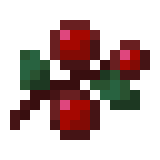

Biomas
O Campo de cogumelo é um raríssimo exuberante bioma, e também é o mais raro bioma não-variante do jogo (sendo o bioma mais raro as extremidades modificadas da selva). O bioma de cogumelos normalmente surge como uma única ilha cercada por oceano, embora que ocasionalmente gere ilhas conectadas, e muito raramente gera uma ilha completa.
No teto, as vinhas e trepadeiras das cavernas com bagas brilhantes crescem para baixo e iluminam as cavernas, e as flores de esporos crescem do teto e gotejam partículas de água. Uma caverna verdejante contém fontes de água e lagos rasos com argila onde plantaformas crescem a partir deles. Às vezes, esses lagos geram secos.
No teto, as vinhas e trepadeiras das cavernas com bagas brilhantes crescem para baixo e iluminam as cavernas, e as flores de esporos crescem do teto e gotejam partículas de água. Uma caverna verdejante contém fontes de água e lagos rasos com argila onde plantaformas crescem a partir deles. Às vezes, esses lagos geram secos.
Mobs
Lobo
 Lobos são achados em sua grande maioria nas floresta de spruce wood, podem ser domesticados com ossos
Lobos são achados em sua grande maioria nas floresta de spruce wood, podem ser domesticados com ossos
Bee
Abelhas são achados em sua grande maioria nos campos floridos, não podem ser domesticadas
Bird
 Papagaios são achados em sua grande maioria nas Jungles, podem ser domesticados com sementes
Papagaios são achados em sua grande maioria nas Jungles, podem ser domesticados com sementes
Foxy

 Raposas são achados em sua grande maioria nas floresta de spruce wood, podem ser domesticados com sweet berries
Gato
 Gatos são achados em sua grande maioria nas aldeias de villagers, podem ser domesticados com peixes
Gatos são achados em sua grande maioria nas aldeias de villagers, podem ser domesticados com peixes
Sapo
Sapos são achados em sua grande maioria nos pantanos , não podem ser domesticados, mas comem cubo de magna